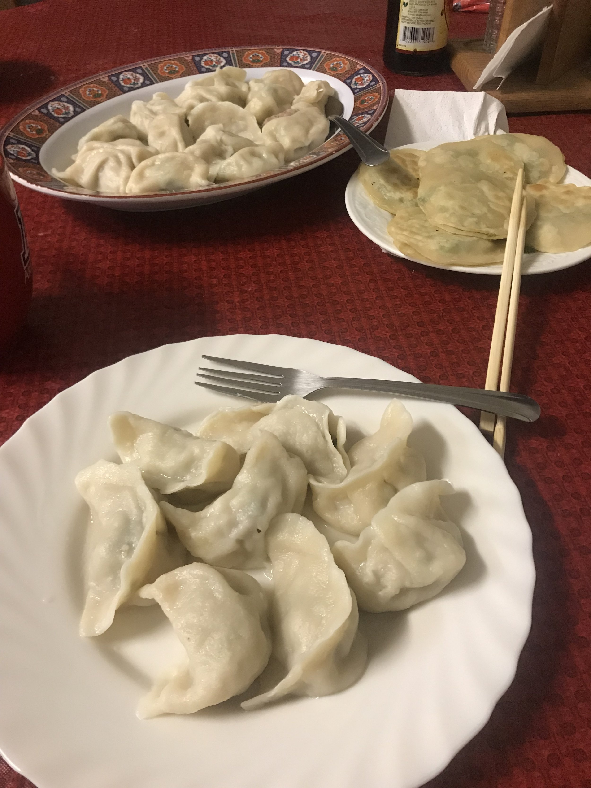
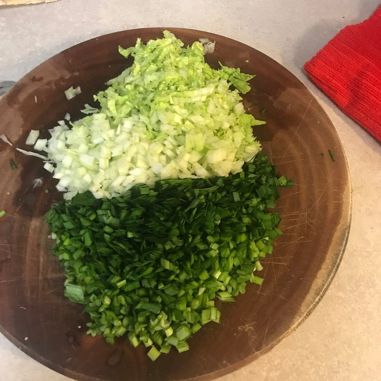
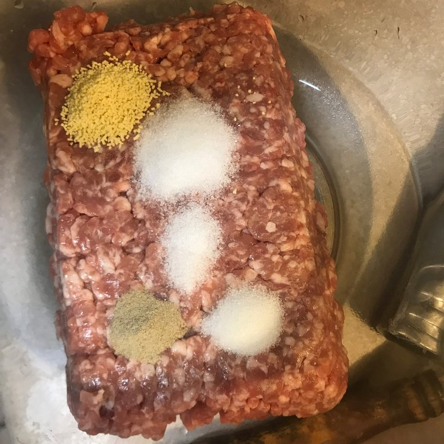

Pork & Napa Cabbage Dumplings

This is a standard pork and napa dumpling recipe from da mom. Homemade dumping skins and filling,
so everything is basically from scratch. Pretty easy after you figure it out once but it does take a while.


Ingredients
Dumpling Skin Dough
- 3 cups all purpose flour)
- 1.5 cups water
- Pinch of salt
Meat Filling
- 1 3/4 pounds of ground pork
- 1 to 2 cups minced napa cabbage
- 1 cup minced green chives
- 1 teaspoon salt
- 1 teaspoon chicken seasoning
- 1/2 teaspoon white pepper
- 1/2 teaspoon sugar
- 1/2 teaspoon oil
- 1/2 teaspoon water
Instructions
- Combine dough ingredients until it resembles dough. Let the dough rest in bowl while making the dumpling
filling. Suggestion: Use chopsticks to mix initially then switch to hands
- Combine pork and seasonings, oil and water together. Mix until meat forms a sticky texture.
Add in chives and napa and mix together.
- Portion out dough into roughly 1 inch balls. Roll the dough ball with pin until it forms a circle.
Add in meat filling and fold into a dumpling. Set folded dumpling aside on floured surface while
folding the rest of the dumplings.
- Boil a pot of water. After the water starts to boil add in dumplings until filling one layer. At this
point the water should have stopped boiling. Wait until the water boils again, then set a timer for
6 minutes. After six minutes the dumplings should be cooked and ready to eat.